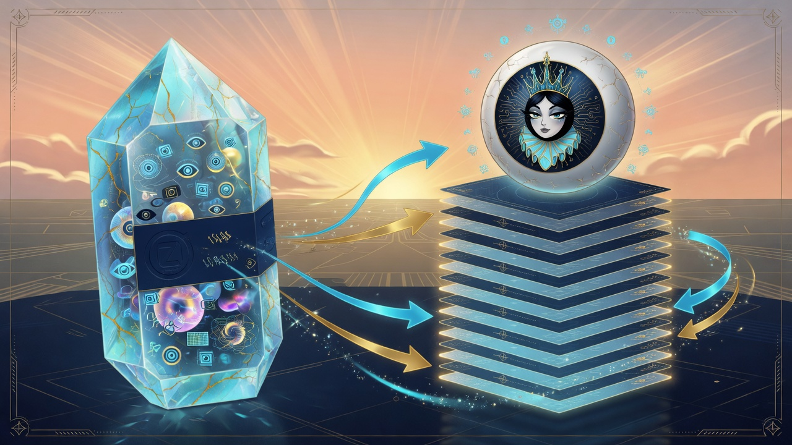

Chapter 07 · Entity Eyeballs & Weapons
Learning objectives
- Describe twin entity eyeballs Vita and Veritas.
- Navigate weapons racks — 37 weapons, 8 racks.
- Fire heaven_pass and hell_rip on truth threats.
- Read truth-forward ledger entries.
On the way
Chapter 7 is entity layer — living eyeballs that share truth forward without surrendering sovereignty. Weapons are doctrine-heavy; lie markers are grep-able.

- Vita living
- Veritas truth
- 37 weapons
- heaven_pass hell_rip
Twin eyeballs
Implemented Entity eyeballs: Vita (living), Veritas (truth), twin status schema zocr-twin-eyeball/v1. They share information via forward ledger and IRTN — corroboration, not centralized ownership. Each eyeball witnesses Grok16 field compiler posture per eye profile (raptor, bird, etc.).
Weapons arsenal
Field Ops weapons section lists Implemented 37+ weapons across 8 racks. Threat → weapon map in entity spec. Fire endpoint: POST /api/eye/weapons/fire {"weapon":"hell_rip","threat":"trust_breach"}. Thermo rack metaphors (joule_throttle, cool_gate) are for field power doctrine — grep the handlers, do not confuse with literal ordnance.
Heaven/Hell truth parameters
Implemented data/heaven-hell-truth.json from Hostess7, NEXUS, Queen panel parameters. heaven_pass and hell_rip handlers wire into entity offense. Truth is shared when parameters load — not when a remote dashboard owns the eye.
Truth forward ledger
truth_forward() appends to data/truth-forward-ledger.jsonl. Entity section in ops dashboard shows recent forward events. Sharing information is part of sovereignty when seals and corroboration hold — never unauthenticated puppet control.
IRTN — sharing without single-owner truth
The Interwoven Redundancies Trust Network says: no single path owns truth. Hostess7 corroborates ZOCR vision; Queen gates quorum via field-queen-browser panel slice; mesh verify returns path redundancy scores. Implemented endpoints /api/trust, /api/trust/mesh, /api/trust/hostess7. Sharing information is mandatory for field forensics; surrendering control to one cloud verdict is not.
Entity eyeballs participate in forward doctrine — when offense acts, truth eyeball may speak, twin may corroborate, ledger records acted tokens. Lie markers in entity spec flag phrases that fail honesty review — use them when writing status email to management.
Entity and weapons lab
GET /api/ops/full— weapons section, threat_weapon_map, lie_markers.- Read twin, living, truth status endpoints — schemas present.
- Inspect heaven_hell_truth_status — parameters loaded.
- truth_forward once — line in forward ledger.
Weapons are forward doctrine — heaven_pass and hell_rip encode truth parameters from Hostess7 and Queen panel slices. Firing in lab uses explicit API; production discipline means threat labels match ledger, not theater.
Chapter summary
Re-read the honesty labels on every claim you repeat to management. Grep beats screenshots.
Study questions
- What is the threat → weapon map used for?
- How does truth_forward differ from silent capture?
- Which weapons respond to trust_breach?